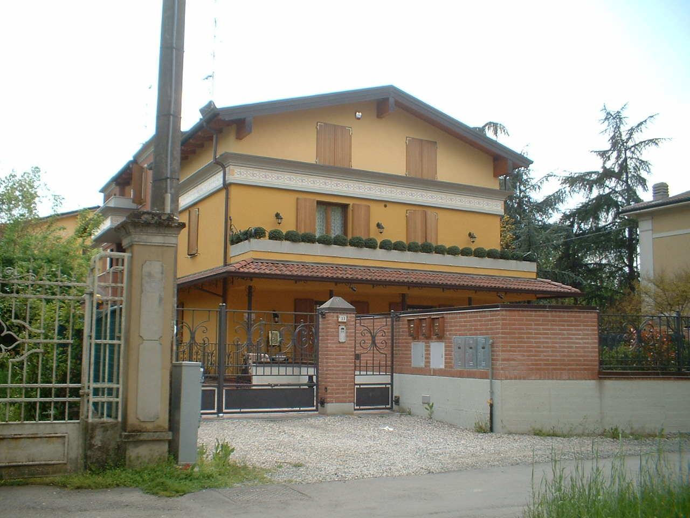
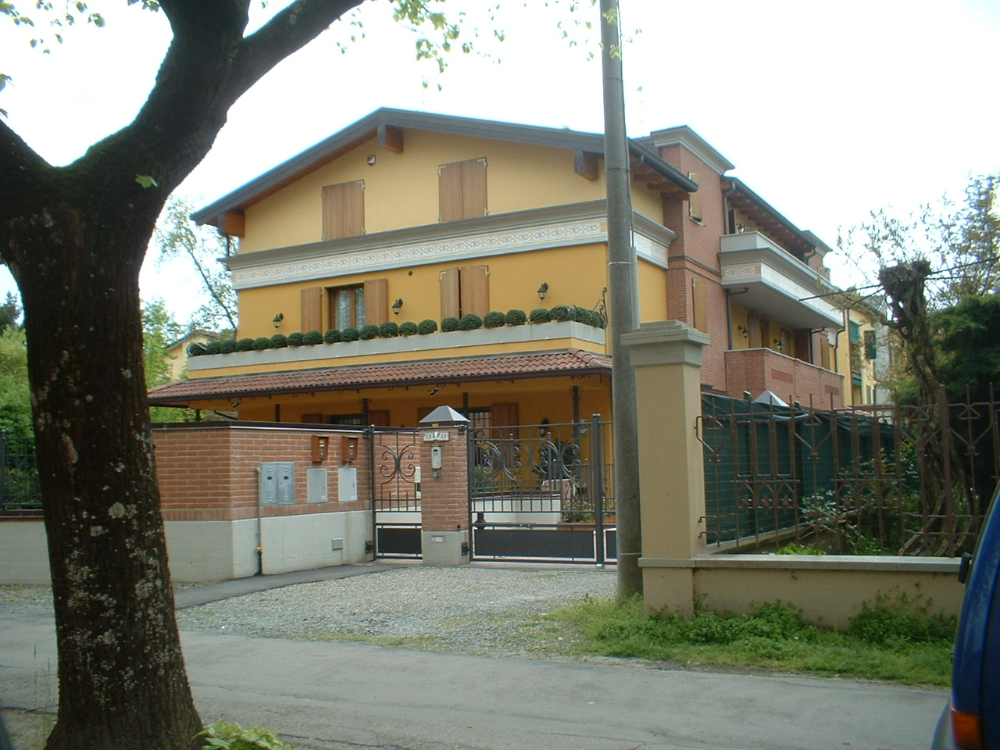
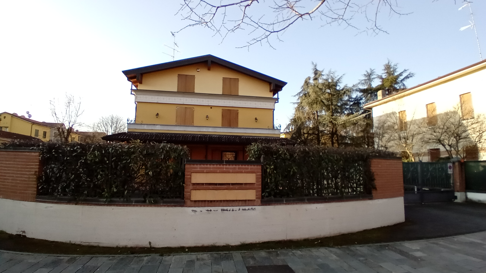
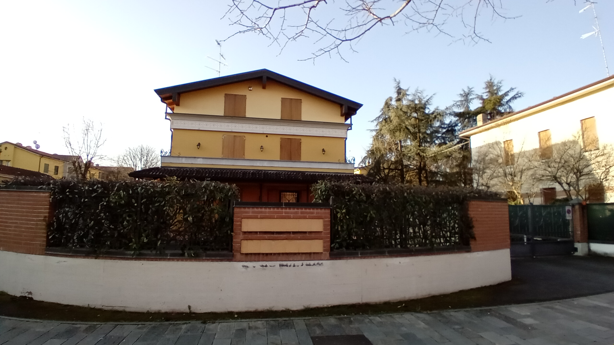
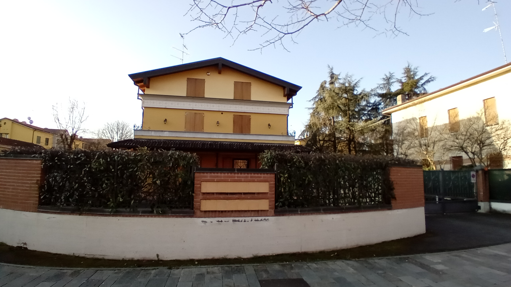

Via Roma



 


Per anni è stato un lotto libero a prato, sulla via che dalla stazione porta al centro di Novellara.
E’ un nuovo villino a quattro ampie unità abitative, le due in testata ai volumi sono dotate di un giardino pertinenziale in proprietà esclusiva.
Molto elegante l’aspetto esteriore, giocato con un caratteristico marcapiano in rilievo tra il primo e secondo piano e un’alternanza di tinte gialle. Il tetto a struttura lignea sporge creando un piacevole contrasto tra tinteggio e legno.